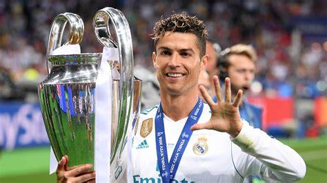

A História de um dos Maiores Clubes do Mundo
Introdução
O Real Madrid Club de Fútbol é um dos clubes mais icônicos da história do futebol. Fundado em 1902, é conhecido mundialmente por suas conquistas, tradição e por representar a excelência esportiva.
1. Fundação e Primeiros Anos
Fundado em 6 de março de 1902 como Madrid Football Club, o Real Madrid recebeu o título de "Real" do rei Afonso XIII em 1920. Desde os seus primeiros anos, destacou-se nas competições regionais e na Copa del Rey.
2. Ascensão ao Sucesso Nacional
Com a criação da La Liga em 1929, o Real começou sua trajetória na elite do futebol espanhol, estabelecendo-se como um dos principais clubes do país, mesmo em meio à Guerra Civil Espanhola.
3. A Era de Ouro – Décadas de 1950 e 60
Com Alfredo Di Stéfano, Puskás e Gento, o clube venceu as cinco primeiras Ligas dos Campeões entre 1956 e 1960. Essa geração transformou o Real Madrid em uma potência europeia.
4. Expansão e Reconstrução (Décadas de 70 e 80)
Mesmo após a saída de Di Stéfano, o Real manteve sua força com a geração conhecida como "Quinta del Buitre", formada por jogadores como Butragueño e Michel.
5. A Era Galáctica – Início dos Anos 2000
Florentino Pérez contratou grandes estrelas como Zidane, Figo, Ronaldo e Beckham. Essa era marcou um crescimento global da marca Real Madrid, com destaque para o título da Liga dos Campeões de 2002.
6. A Era Cristiano Ronaldo
Cristiano Ronaldo chegou em 2009 e se tornou o maior artilheiro da história do clube. Entre 2014 e 2018, o Real venceu 4 Ligas dos Campeões, sendo 3 consecutivas sob o comando de Zidane.
7. Santiago Bernabéu
O estádio do Real Madrid é um ícone mundial. Inaugurado em 1947, passou por várias reformas e continua sendo palco de grandes momentos da história do futebol.
8. Real Madrid Feminino
Em 2020, o clube lançou oficialmente sua equipe feminina após incorporar o CD Tacón, demonstrando seu compromisso com o crescimento do futebol feminino.
9. Títulos e Reconhecimento
O Real Madrid é o maior campeão da Champions League (15 títulos), possui 35 La Ligas, 20 Copas do Rei e foi eleito pela FIFA como o Melhor Clube do Século XX.
10. O Real Madrid no Século XXI
O clube continua inovando com jovens talentos como Vinícius Jr., Rodrygo e Bellingham, além de reformar seu estádio e manter sua presença global forte.
Conclusão
Mais que um clube, o Real Madrid é uma lenda viva. Sua história é marcada por conquistas, ídolos e um espírito vencedor que encanta torcedores de todas as partes do mundo.
Principais craques
| Cr7 | Beckham | Zidane |
|---|---|---|
|  |
Afirmação Bônus:
Cr7 é o Goat